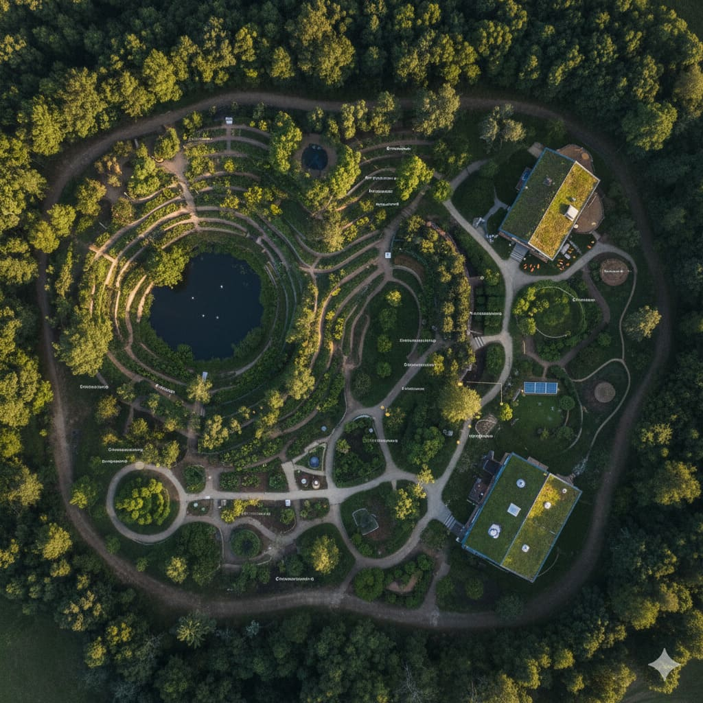

An internationally recognized credential — earned through full immersion in a living cloud forest nature reserve. No prior experience required. All meals and accommodation included.


Permaculture is one of the most practical design frameworks in the world — covering land use, water, food systems, buildings, and community. In 16 days, you'll learn how to apply it. And you'll graduate with a globally recognized certificate and real-world design experience.
This course takes place entirely at Valle Escondido Nature Reserve Hotel & Farm — a living, certified example of permaculture design, right in the heart of Monteverde's cloud forest. You're not visiting a classroom. You're living inside the system you'll learn to design.
Most people interested in regenerative living, land, or sustainable projects hit the same wall. This course breaks it down into a clear, globally proven methodology.
But without a clear methodology, you risk wasting time and money on the wrong approach. Permaculture gives you the sequence: observe, assess, then design — before breaking ground.
In a world of sustainability degrees that all look the same, an internationally recognized PDC certificate stands out — especially for roles in design, planning, agriculture, and hospitality.
YouTube and books only take you so far. Real design skill comes from hands-on practice in an actual landscape — with expert instructors watching and guiding your work in real time.
25 participants from across the world, living and working together for 16 days. These aren't LinkedIn connections — they become long-term collaborators, clients, and friends.
Permaculture is not gardening. It is a globally proven design methodology for creating systems — land, buildings, communities, businesses — that work with nature instead of against it: efficient, regenerative, and better with time.
The Permaculture Flower maps the seven domains of human life — land use, buildings, tools, education, health, finance, and governance — into a unified design framework. The PDC teaches you how to apply these principles to any real project.
Earth Care · People Care · Fair Share — the moral foundation of every design decision.
From "observe and interact" to "use and value diversity" — a replicable methodology used in 140+ countries.
Every system at the reserve — water, soil, food, energy — was designed using these exact principles. You'll study inside the result.
This isn't a rented venue. Valle Escondido is a certified nature reserve, working regenerative farm, cloud forest hotel, and farm-to-table restaurant — all designed using the principles you'll learn. You'll live, eat, and study inside a real permaculture system, in one of the most biodiverse regions on Earth.


Every system at Valle Escondido — water, soil, food, energy — was designed using the permaculture principles you'll learn here.
Private cloud forest nature reserve in Monteverde — one of the most biodiverse regions on the planet, with extraordinary birdwatching and wildlife.
Hidden Valley Farm and Dirt Lab operate on-site. You'll learn soil science and regenerative agriculture from the practitioners who run them daily.
Every meal is prepared from food grown on-site. 48 meals over 16 days — all produced by the same regenerative systems you'll study.
Guided night tours of the private reserve, nocturnal wildlife encounters, and unrestricted access to trails through primary cloud forest.
On-site accommodation at the hotel. You wake up, step outside, and you're in your classroom. There is nowhere else like this in Costa Rica.
The Permaculture Design Certificate (PDC) is a globally recognized credential in sustainable design — following the full curriculum created by Bill Mollison and David Holmgren, the founders of the permaculture movement. You'll graduate having designed real projects for real people in Monteverde.
Read landscapes, understand natural patterns, and create systems that regenerate soil and biodiversity instead of depleting them.
You'll develop an actual permaculture site design for a real landowner in the Monteverde region — not a classroom simulation.
25 professionals from around the world, plus instructors with decades of on-the-ground experience in Costa Rica and beyond.
Add it to your CV, LinkedIn, or project portfolio. Recognized by employers, land development firms, and sustainability organizations worldwide.
Field trips to active permaculture projects in the region. You'll interact with local communities and see the principles implemented at multiple scales.
Internationally recognized · Full curriculum · Awarded upon completion
Everything included in your $1,800 early bird (or $2,000 regular) registration:
Valle Escondido is not a training center with a simulated garden. It is a working cloud forest nature reserve, regenerative farm, and hotel — all designed using the same principles you'll learn to apply. Your classroom is the reserve itself.
Check-in on May 20, the course runs May 21 – June 4. Departure on June 5. Plan 16 nights total — fully immersed from day one.
Covers the complete Permaculture Design Curriculum: ethics, principles, observation, water, soil, food systems, structures, community design, and more.
The capstone is a complete permaculture site design — developed collaboratively for an actual landowner or project in the Monteverde region.
Three daily meals prepared with food grown at Valle Escondido's own farm. Living and eating together in the reserve deepens the learning and the community.
Maximum 25 participants from diverse professional backgrounds worldwide. English is the course language. Past cohorts have included professionals from Costa Rica, Europe, the USA, and Latin America.
Interact with local farms, projects, and communities where permaculture is actively practiced. Learning doesn't stop at the reserve gates.
Break down what's included and what you'd pay for each piece separately — then tell me this isn't the most underpriced experience you've ever seen.
Early Bird valid until April 5 · Regular price $2,000 after that date
Not academics. Not theorists. Each instructor teaches from lived, hands-on practice in Costa Rica's most challenging and rewarding ecosystems.

Environmental educator and permaculture designer trained in direct lineage from Bill Mollison. Co-founder of Guardianes del Bosque, stewarding 400+ hectares of ecological restoration in Costa Rica's South Caribbean.

Environmental health graduate, farm-to-table specialist, and member of Comunidad Hierba Buena — a community of six families practicing collective regenerative living. Teaches permaculture from lived, daily experience.

Originally from Uruguay. Mechanical engineer turned permaculture educator — designing food forests and curricula for organizations including Food Forest Abundance and Ecoversity. Lives with a working food forest at home.

Monteverde native with 12 years as Permaculture Design Director at Valle Escondido. Former forest ranger, specialist in organic agriculture, soil chromatography, and natural biodiversity management.

Permaculture instructor and educator with hands-on experience in regenerative design and sustainable community development across Costa Rica.
"I entered the PDC with a project in mind and no idea where to start. I left with a plan. Permaculture gave me something more valuable than information: a logical, proven, globally replicated sequence for making design decisions with strategy. Choose the right land. Read the water flow. Use solar orientation. Plan spaces before building them. Each principle exists to prevent the mistakes that — without a clear methodology — you pay for with time and money you can't get back. And I left with something else: a network of instructors, experts, and fellow participants who are now real contacts I can consult at every stage of my project. All of this, living in one of the most extraordinary places I've ever been. Monteverde, Valle Escondido — the complete experience — are an inseparable part of the learning. You can't explain it. You have to live it."
"I loved taking the PDC because it helped me design and plan the activities I'm involved in at a much deeper level. Beyond that, it was a wonderful experience getting to meet people who truly care about environmental conservation. I also want to thank the AVER collective for managing scholarships — many small entrepreneurs don't have the resources to access such a comprehensive course."
"I highly and fully recommend it to anybody who's interested in pursuing a PDC — whether you know nothing about it, or whether you know everything about it. It's a great place to be. The gardens, the views are incredible. The birds you can see, the birds you can hear. The sounds at night, the jungle, the night tours — there's so much to do outside of permaculture, which was awesome. Valle Escondido PDC: it's where it's at. Come and get it."
"If you're considering doing this class, do it — you'll love it. Doesn't matter what your background is. Really, most of us were starting almost from zero, so to go from zero to being able to present a complete project in two weeks is just fantastic."
This course runs once per year in English, drawing participants from across the globe. Past cohorts have included professionals from Costa Rica, USA, Mexico, Europe, and beyond. When 25 people compete for those spots, they fill fast.
Not included: international or domestic flights, travel insurance, transportation to/from Monteverde, personal expenses.
Regular rate: $2,000 USD
⚡ Early Bird — valid until April 5, 2026 only
Includes 16 nights lodging + 48 meals + full access to reserveDeposit: $900 USD to confirm your place
Balance payable in 2 installments · Full payment by April 21
🔒 Application reviewed · Confirmation by email

AVER — Asociación Valle Escondido para la Regeneración — is a Costa Rican nonprofit. The proceeds from this English-language PDC directly fund the Spanish-language program, making permaculture education accessible to local participants across Costa Rica and Central America.
For Costa Rican nationals, AVER's local PDC costs $450. Some receive scholarships to attend for free. Your registration makes that possible.
This documentary takes you inside the reserve — from the water harvesting systems and regenerative farm to the community education programs that shape every PDC cohort. Watch before you apply.
Rooftop collection flows through clay ponds — no plastic — that filter and balance pH. Used for irrigation and toilets throughout the reserve.
Bokashi, mountain microorganisms, and on-site composting produce the fertilizers used across 45 acres. You'll work with these systems during the PDC.
Bananas, herbs, fruit trees, and tilapia aquaculture all integrated into the landscape design. The restaurant food comes directly from here.
Solar water heaters, sector analysis for optimal building orientation, and natural drying systems — all observable and teachable during your stay.
AVER's nonprofit programs fund permaculture greenhouses in local schools and subsidize PDC access for Costa Rican participants. Your enrollment helps this.
Primary cloud forest nature reserve. The same land where Jonah, the owner, came searching for a more sustainable life — and built a globally recognized model for regenerative tourism.
No prior knowledge is required. The course is designed for beginners and professionals alike. Participants come from architecture, agriculture, tourism, engineering, education, and many other fields. What matters is genuine interest and commitment to the full 16-day experience.
Yes. The PDC follows the full internationally recognized Permaculture Design Curriculum developed by Bill Mollison and David Holmgren — the founders of the permaculture movement. The certificate is recognized by permaculture organizations, land design firms, sustainable hospitality operators, and regenerative agriculture programs worldwide. Valle Escondido itself stands as a certified, living demonstration of permaculture design.
The fee covers 16 nights of accommodation at Valle Escondido Hotel, 48 meals (three daily, all prepared from food grown on-site at the Valle Escondido farm), full access to the private cloud forest nature reserve, guided night tours, all course materials, hands-on field activities, community site visits, the real-client design project, and the Permaculture Design Certificate upon completion. What's not included: international and domestic flights, travel insurance, transportation to/from Monteverde, and personal expenses.
A deposit of $900 USD secures your spot. The remaining balance can be paid in 2 installments, with full payment completed no later than April 21, 2026. We accept international bank transfer and credit card.
The 25-person limit is intentional. Permaculture design is learned through observation, collaboration, and direct instructor feedback — a large group defeats the purpose. This is the only English-language PDC at Valle Escondido offered in 2026. There is no second edition and no waitlist for a future session this year. If this cohort fills, the next opportunity is 2027.
Yes, this course is designed for an international audience and is taught entirely in English. Monteverde is accessible from all major international airports in Costa Rica (SJO in San José and LIR in Liberia). Transportation from San José to Monteverde is widely available (approx. 3–4 hours). Transport is not included in the fee. Past cohorts have included participants from the USA, Mexico, Europe, and Latin America.
We invite you to schedule a free 30-minute call with one of the course instructors. It's a genuine conversation — not a sales call. Ask anything about the curriculum, Valle Escondido, how the course might apply to your specific situation, or what a typical day looks like.
Both — and the balance is one of the things past participants mention most. The course combines conceptual sessions with outdoor practical activities, soil and water fieldwork, community site visits, and a full collaborative design project for a real client. Valle Escondido's working farm, reserve, and natural systems are your laboratory. You are always in the classroom, not just looking at it.
Schedule a free 30-minute call. You'll speak directly with one of the course instructors — not a sales team. Ask anything about the curriculum, Valle Escondido, or whether this course fits your goals.
16 days inside a living cloud forest. A globally recognized certificate. Real design experience for a real client. A network that lasts. And a place you'll never forget.
Apply for Your Spot — May 2026 →